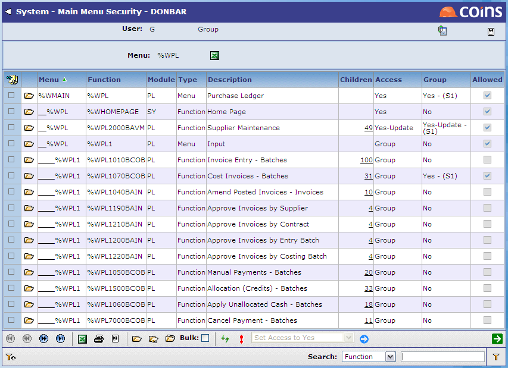
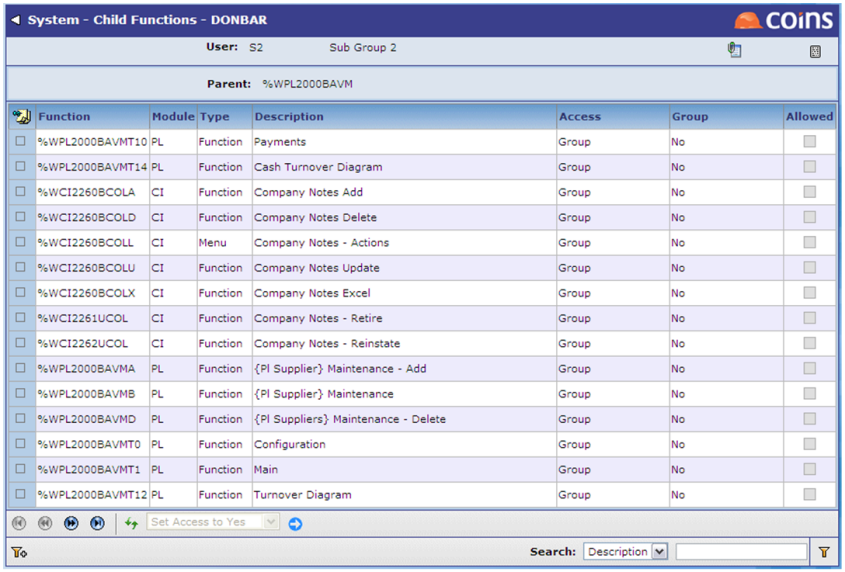

How To Set Up Menu Item Security Using Main Menu Security:
- Go to Main Menu Security.
- Enter the user, group or sub group for which you want to specify access.
- Enter the code for the top-most menu for which you want to specify access.
The Main Menu Security screen shows all menus and menu items from the start menu that have themselves as a parent (that is, they are considered as main menu items).

You can specify the following access to functions:
|
Not Using Menu Item Security |
Using Menu Item Security |
|---|---|
|
|
|
|
|
|
- To update access for several functions at the same time, select one or more records and either:
- Use the Choose Action menu or multiple update button to set the same access for all the selected menu items.
- Use the
 concurrent update button to set the access for each item separately.
concurrent update button to set the access for each item separately. - To update access for a single function, use the
 button.
button. - You can set the access for child functions by clicking the link in the Child column, and using the Choose Action to set the permissions for individual child functions.

If you are using Menu Item Security, by default, the access to any child functions will be the same as the access to the parent function; setting them on this screen will override this default setting.